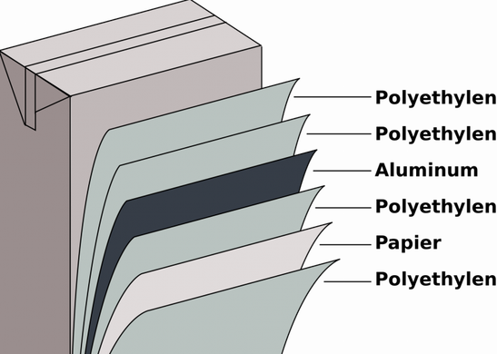

|
ENVIVALION |
|
|
ENVIVALION |
Tetra Pak es una empresa multinacional fundada en Suecia, que diseña y produce soluciones de envasado de cartón y procesamiento para la Industria alimentaria.
u producto más conocido, lamado originalmente Tetra Pak, en honor al nombre de la empresa, es una multinacional que provee envasado de cartón a gran parte de la industria de alimentos, principalmente en los lácteos, logrando un envase que mantiene fresco el producto, protegiéndolo de bacterias y las altas temperaturas.
|
Los envases de Tetra Pak están formados por seis capas, ordenadas de exterior a interior: polietileno, cartón, polietileno, aluminio, polietileno y polietileno. Tal como lo señalan en su sitio web, las materias primas renovables de origen sostenible y de origen vegetal que utilizan son la madera y la caña de azúcar. “La madera se puede reponer naturalmente con el tiempo, reduce nuestra dependencia de recursos y materiales finitos”, señalan. |
 |
El reciclaje de este pruducto se lleva a cabo en plantas de transformación las cuales aprovechan el cartón, que corresponde en promedio al 75% del envase y con el que se hacen productos de pulpa moldeada; y el 25% restante correspondiente a residuos de plástico y aluminio o PoliAluminio con el cual se pueden hacer puntos ecológicos o polialuminio peletizado para piezas plásticas como pisos industriales, materas, canastas, etc.
Leer más sobre:
|
¿Qué es el Medio Ambiente? |
Contaminación |
Cambio Climático |